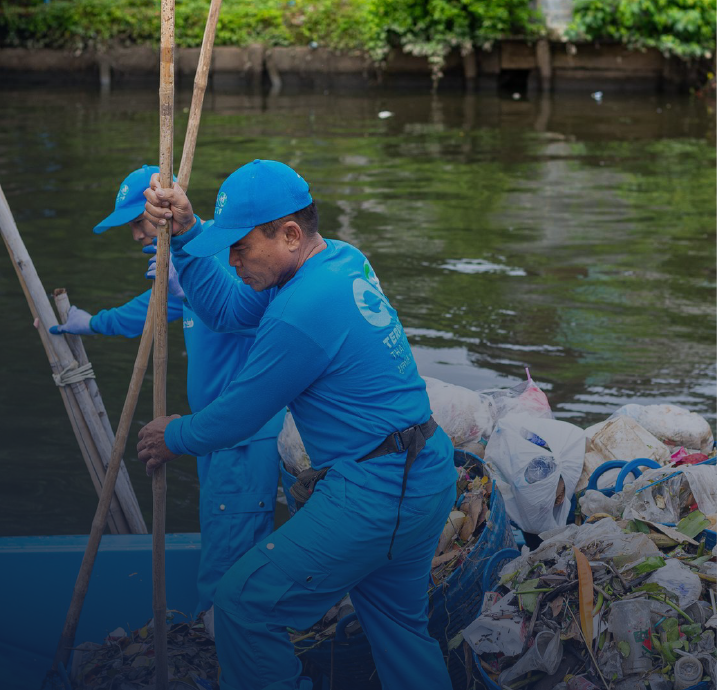

NUESTRA MISIÓN
LA RECUPERACIÓN DE RESIDUOS Y PLÁSTICOS
La misión de TerraCycle Global Foundation es reducir el flujo de desechos plásticos de los ríos y canales antes de que puedan llegar al océano. En estrecha colaboración con las comunidades locales, diseñamos soluciones de prevención, recolección y reciclaje de desechos fluviales de clase mundial en regiones del mundo que sufren de vías fluviales.
DONAR
